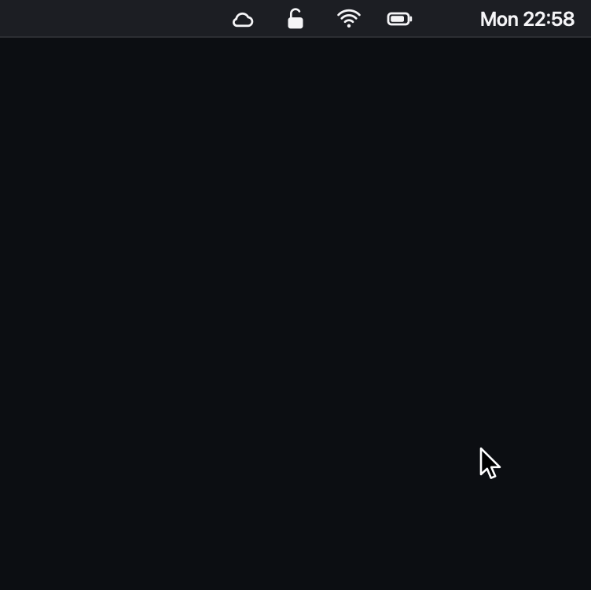
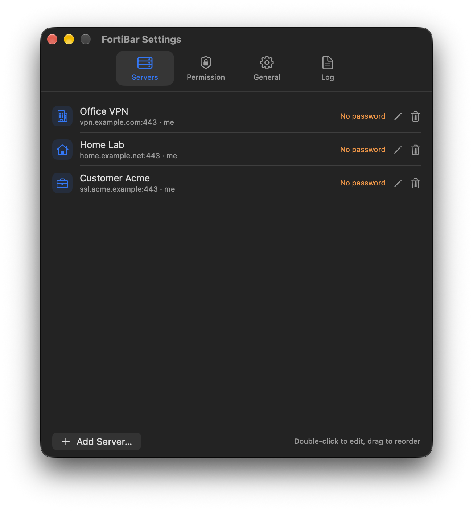
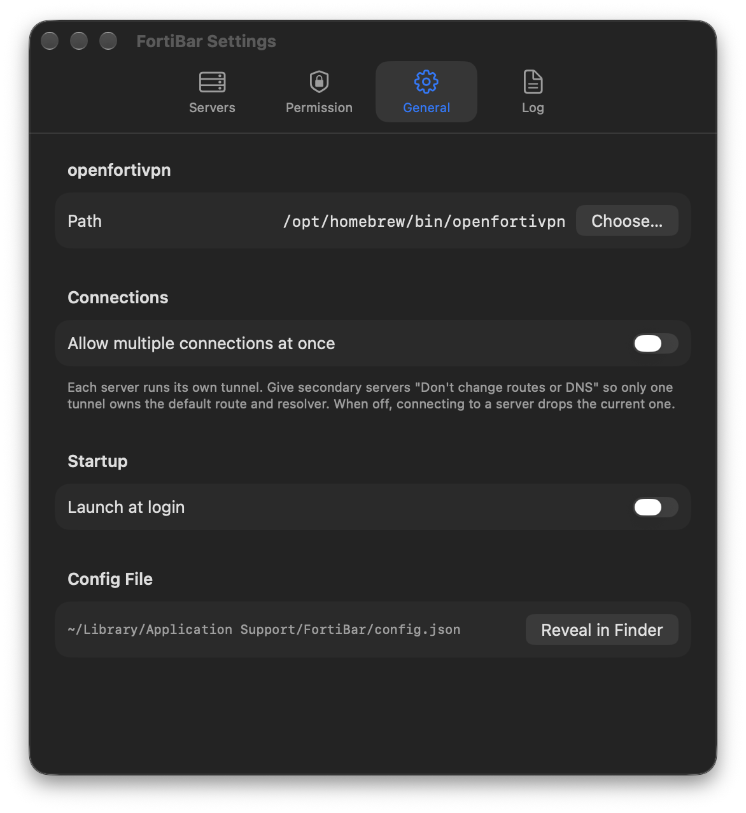
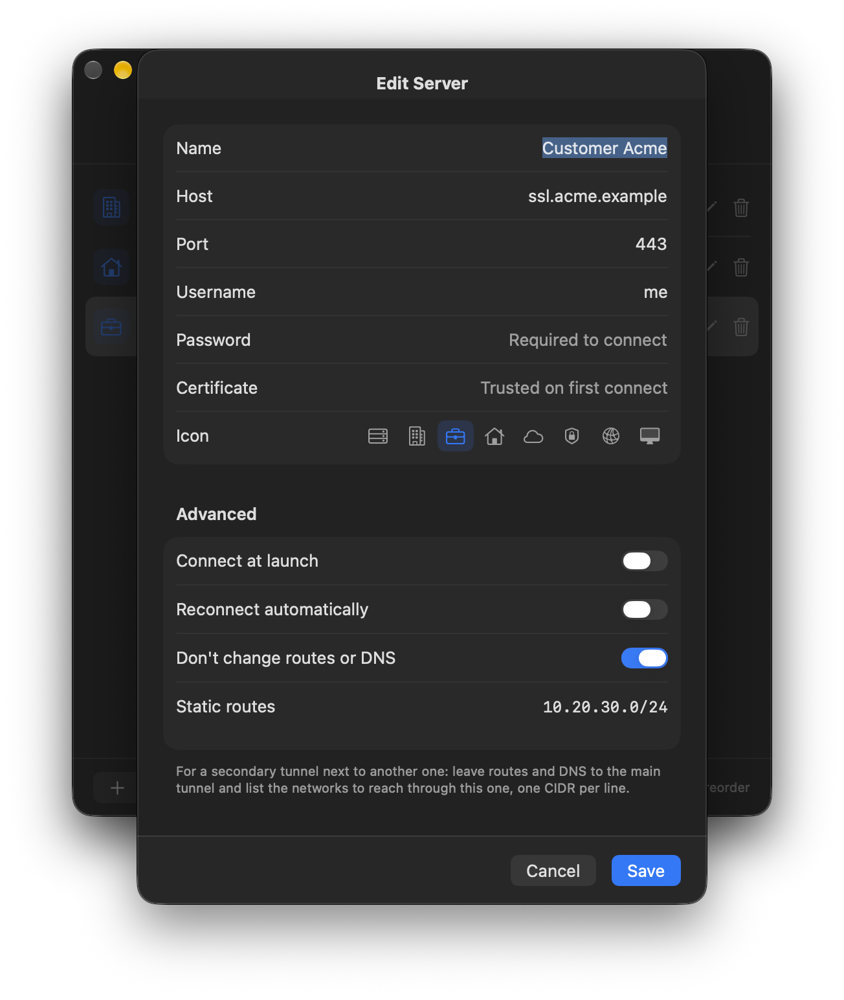

FortiBar
FortiVPN in your Mac's menu bar. One click to connect, several tunnels at once, back online on its own.
Free and open source · macOS 13 or later · Needs openfortivpn
Click. Connect. Done.
Open the panel from the menu bar, hover a server and click Connect. Connection time and tunnel IP are always a click away.

Small app. Serious tunnels.
Everything openfortivpn can do, without a terminal window open all day.
-
Several tunnels at once
Office, lab and customer VPNs side by side, each with its own status, log and Disconnect. Keep routes and DNS on one of them.
-
Auto-reconnect
When a tunnel drops after sleep or a network change, FortiBar waits for the network and retries with backoff until you disconnect.
-
Certificate trusted on first connect
A self-signed gateway just works: the first connection pins its certificate. A different one later is an error, never a silent accept.
-
Passwords in Keychain
Stored in the macOS Keychain. Never in a config file, an environment variable or a command line.
-
One-prompt sudo setup
Let openfortivpn run as root with a single administrator prompt. The rule is checked with visudo and removed just as easily.
-
A real CLI
fortibar connect office,status --json,logs -f. Script everything the menu does.
Feels like it came with your Mac.
Native SwiftUI settings for servers, permissions and per-tunnel options.



Install in a minute.
FortiBar drives openfortivpn, so install that first.
Download
-
Install openfortivpn with Homebrew.
brew install openfortivpn - Download the latest DMG and drag FortiBar to Applications.
- The app is not notarized: on first launch open System Settings → Privacy & Security and click Open Anyway.
- Click Set Up… to let openfortivpn run as root, then add your servers.
Build from source
Requires Xcode 26 or later. The script builds a universal DMG.
git clone https://github.com/RomanVassilchenko/FortiBar.git
cd FortiBar && ./build_dmg.sh
Command line, configuration file and troubleshooting are in the README.